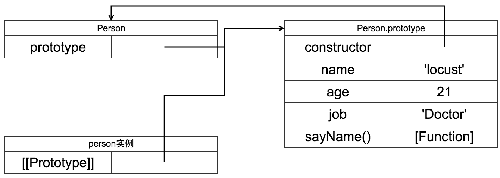
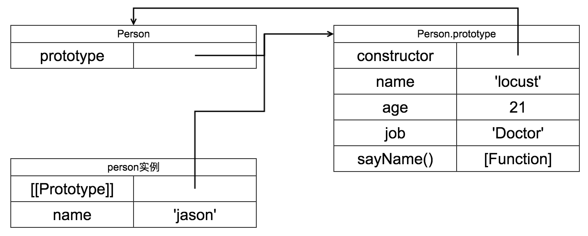

第四章 变量、作用域和内存问题
本章将探讨
- 基本类型和引用类型的值
- 执行环境
- 垃圾回收
基本类型和引用类型的值
- 基本类型包括
Undefined、Null、Boolean、Number和String. 这五种基本数据类型是按值传递. - 引用类型的值是保存在内存中的对象.由于JavaScript不允许直接操作内存, 在操作对象时, 实际上是在操作对象的引用.
动态属性
可以再对象创建后给对象添加新的属性
let person = new Object();
person.name = 'locust';
console.log(person.name) // 'locust'
但无法给基础类型添加新的属性
let name = 'locust';
name.age = 21;
console.log(name.age) // undefined
复制变量值
对于基本类型, 从一个变量复制另一个基本变量的值时, 会在变量对象上创建新的值

对于引用类型, 当一个变量复制另一个变量的值时, 会将引用复制一份到新的变量中, 并且指向相同的对象
let obj2 = obj1;
obj2.name = 'locust';
console.log(obj.name) // locust

传递参数
无论是基本类型或是引用类型, 对于函数传参都是按值传递的.
对于基本类型很容易理解
function addOne(num) {
num += 1;
return num;
}
let ten = 10;
console.log(addOne(ten)) // 11
console.log(ten) // 10
而对于引用类型, 是将引用复制到形参中, 形参和实参都同时指向内存中的对象.
function setName(obj) {
obj.name = 'locust';
}
let person = new Object();
setName(person);
console.log(person.name) // locust
上面这段代码看似是按引用传递的, 但其实是将引用的值复制并传递
以下代码可以验证
function setName(obj) {
obj = new Object();
obj.name = 'locust';
}
let person = new Object();
person.name = 'Jason';
setName(person);
console.log(person.name) // Jason
检测类型
typeof操作符: 对于基本类型, 能给出详细的类型信息, 但对于引用类型, 只能给出objectinstanceof用于检测一个变量中的值是否是某个类的实例
执行环境和作用域
执行环境(execution context), 定义了变量或函数有权访问的其他数据.每个执行环境都有一个与之关联的变量对象(variable object), 环境中定义的所有变量和函数都保存在这个对象中.作用域链, 当代码在一个环境中执行时, 会创建变量对象(variable object)的作用域链.- 标识符的搜索是沿着作用域链一级一级往上搜索.
let color = 'blue';
function changeColor() {
let anotherColor = 'red';
function swapColors() {
let tempColor = anotherColor;
anotherColor = color;
color = tempColor;
}
swapColors();
}
changeColor();
// 作用域链示例
window
├── color
└── changeColor()
├── anotherColor
└── swapColor()
└── tempColor
块级作用域
var会导致提升(hoisting)- ES6后建议使用
let与const
垃圾收集
JavaScript具有自动垃圾回收机制, 无需手动申请及释放内存空间.
标记请除(mark-and-sweep)
当变量进入环境时,就将这个变量标记为进入环境, 不允许释放进入环境的变量.
当变量离开环境时,将其标记为离开环境.
垃圾收集器会根据标记找出无法再访问的变量并清除.
引用计数
当引用类型被赋予某个变量时, 那么引用的对象引用计数将会加1. 当引用计数变成0时, 表示没有办法再次访问该对象, 将会被垃圾收集器清除.
循环引用
两个对象互相包含对方的引用将会导致循环引用问题, 此时引用计数永远不会为0, 无法被回收.
let objA = new Object();
let objB = new Object();
objA.foo = objB;
objB.bar = objA;
想要解决循环引用问题, 需要手动解除引用(dereferencing)
objA.foo = null;
objB.bar = null;
第五章 引用类型
Object类型
对象类型的行为与字典相似, 它的键全部都会被转换成字符串
let person = {
hello : 'world',
42: true
}
console.log(person.hello) // wrold
console.log(person['hello']) // wrold
console.log(person['42']) // true;
Array类型
- 创建数组的两种方法.
// 通过构造函数
let foo = new Array();
// 通过数组字面量
let bar = [];
length属性length属性用于指示数组长度, 并且它不是只读的.增加length属性会增加数组长度, 多出的部分为undefined- 当将一个值放在超出数组长度的位置上,
length将会被重新计算, 为最后一个元素的索引位置加一.
检测数组的方法:
Array.isArray()栈方法: 支持
pop和push方法队列方法: 支持
shifg和push方法重排序方法:
sort对数组排序,reverse翻转数组项.迭代方法
every():对数组每一项运行一个函数, 若该函数对所有项返回true, 则返回truesome():对数组每一项运行一个函数, 若该函数对其中一项返回true, 则返回truefilter():对数组每一项运行一个函数, 返回该函数返回true的项组成的数组.map():对数组每一项运行一个函数, 返回每次函数调用结果组成的数组.forEach():对数组每一项运行一个函数, 没有返回值.
Date类型
let now = new Date();
RegExp类型
正则表达式类型, 形如
let expression = / pattern / flag;
其中pattern是正则表达式, flag有下列三个标志
g: 表示全局模式, 即将模式应用于全部字符串,而非遇到第一个匹配项时即停止i: 忽略大小写m: 表示多行模式.
RegExp的实例属性
global: 布尔值, 表示是否设置了全局标志ignoreCase: 布尔值, 表示是否设置了忽略大小写标志.multiline: 布尔值, 表示是否开启了多行模式lastIndex: 整数, 表示开始搜索下一个匹配项的字符位置source: 正则表达式的字面量
RegExp的实例方法
exec(): 主要方法, 接收参数为需要应用模式的字符串, 返回包含第一个匹配项的数组, 匹配失败返回null
Function类型
ECMAScript中的函数实际上是Function类型的实例. 函数名实际上是指向函数对象的引用
let sum = function(num1, num2) {
return num1 + num2;
}
// 等价于
function sum(num1, num2) {
return num1 + num2;
}
为何没有重载
由于函数名实际上是指向函数对象的引用, 所以当尝试重载函数时, 是修改了变量上引用的值, 覆盖了之前声明的函数.
函数内部属性
函数内部两个属性
arguments: 数组, 保存了函数的参数.this: 引用当前函数内部的执行环境.
函数的属性和方法
两个属性:
length: 表示函数希望接收形参的数量.prototype: 每个引用类型都拥有prototype属性,在第六章中将会深入分析.
三个方法:
apply: 接收一个作用域引用和参数数组.
function sum(num1, num2) {
return num1 + num2;
}
function applySum(num1, num2) {
return sum.apply(this, [num1, num2]);
}
call: 接收一个作用域引用和多个参数.
function sum(num1, num2) {
return num1 + num2;
}
function callSum(num1, num2) {
return sum.call(this, num1, num2);
}
bind方法: 改变函数运行的环境
let o = {
color: 'blue'
}
function printColor() {
console.log(this.color);
}
let foo = printColor.bind(o);
foo() // 'blue'
基本包装类型
基本包装类型有三个: String, Number, Boolean, 用于方便开发者以对象的方式创建和操作基本类型.但要注意的是, 基本类型与基本类型对象是不一样的.
在使用时, 解释器会自动读取和写入对象的值
Boolean对象(不建议使用)
// 利用 Boolean 对象创建布尔值
let falseObject = new Boolean(false)
// 与布尔值进行布尔操作
console.log(falseObject && true) // true
由于所有对象在布尔表达式中都是true, 所以布尔对象当然也为true
Number对象
Number对象时数字值对应的引用类型,创建其实例
let num = new Number(19);
Number有几个值得注意的实例方法
toFixed(): 按照指定的小数位四舍五入返回数值的字符串表示.toExponential(): 按照指定的小数位四舍五入返回数值的字符串的科学计数法表示
以及Number对象与Number基本类型在typeof操作符上的不同表象
let num1 = new Number(19);
alert(typeof num1) // 'object'
let num2 = 19;
alert(typeof num2) // 'number'
String对象
String类型是字符串类型的对象包装类型.
String的某些属性与实例方法:
charAt(): 接收一个参数, 返回字符串对应位置的字符(也可以通过[]操作符完成).concat(): 接收任意多个字符串参数, 返回拼接后的字符串.slice(): 对字符串进行切片indexOf(): 接收一个字符串参数, 返回该字符串在被搜索串中的第一次出现的索引, 不存在返回-1.trim()方法, 创建一个字符串副本, 删除前置及后缀的空格, 并返回结果.replace(): 用于根据正则表达式替换字符串
单体内置对象
单体内置对象指由ECMAScript实现提供的, 不依赖宿主环境的. 这些对象在ECMAScript执行前就已经存在.
Global对象
Global对象处于所有作用域链的顶端, 在ECMAScript执行点就已经载入, 除了拥有之前提到的诸如isNaN(), isFinite(),parseInt()等都是Global对象的方法.
除此之外, 它还包含一些其他方法.
URL编解码方法encodeURIComponent(): 是对统一资源标识符（URI）的组成部分进行编码的方法。它使用一到四个转义序列来表示字符串中的每个字符的UTF-8编码.encodeURI(): 会替换所有的字符，但不包括以下字符
decodeURIComponent(): 将已编码 URI 中所有能识别的转义序列转换成原字符decodeURI(): 将已编码 URI 中所有能识别的转义序列转换成原字符，但不能解码那些不会被encodeURI()编码的内容
eval()方法: 将会解析传入的JavaScript脚本字符串并执行.Global对象的属性
window对象: 在浏览器中,window对象扩展了Global对象, 并成为新的全局对象.
第六章 面向对象的程序设计
原始时期创建对象的方法
let person = new Object();
person.name = 'locust';
person.sayName = function() {
alert(this.name);
}
这个对象中添加了name属性和sayName()方法.
属性类型
在ES5中定义了两种属性: 数据属性和访问器属性. 为了表示属性是内部值, 该规范将它们放在两对方括号中, 例如[[Enumerable]].
数据属性
[[Configuralbe]]: 表示能否通过delete删除属性从而重新定义属性, 能否修改属性的特性, 或者能否将属性修改为访问器属性.[[Enumerable]]: 表示能否通过for-in遍历.[[Value]]: 表示这个属性的值, 当修改当前属性时, 需要从这个位置修改.[[Writable]]: 表示该属性是否可写.
例如:
let person = {
name: 'locust'
};
对于person对象中的name属性, [[Value]]被设置为locust
修改属性默认特性的方法
ES5提供了修改默认属性特性的方法Object.defineProperty(obj, prop, descriptor), 其中
obj: 表示属性所在的对象.prop: 表示属性的名字.descriptor: 用于描述属性对象特性的对象.
例如
let person = new Object();
Object.defineProperty(person, 'name', {
writalbe: false,
value: 'locust'
}
alert(person.name); // locust
// (在严格模式下, 向不可写属性复制会抛出异常)
person.name = 'jason';
alert(person.name); // locust
访问器属性
[[Configuralbe]]: 表示能否通过delete删除属性从而重新定义属性, 能否修改属性的特性, 或者能否将属性修改为访问器属性.[[Enumerable]]: 表示能否通过for-in遍历.[[Get]]: 在读取属性时调用的函数, 默认值为undefined[[Set]]: 在写入属性时调用的函数, 默认值为undefined
同样可以通过Object.defineProperty(obj, prop, descriptor)修改访问器属性.
例如
let person = {
_age: 21
}
Object.defineProperty(person, 'age', {
set: function (newValue) {
if (newValue < 0) {
this._age = 0;
return;
}
this._age = newValue;
}
});
创建对象
工厂模式
function createPerson(name, age, job) {
let o = new Object();
o.name = name;
o.age = age;
o.job = job;
o.sayName = function() {
alert(this.name);
}
return o;
}
工厂模式可以解决创建对象的代码冗余问题, 但是仍然无法解决对象识别问题(instanceof)
构造函数模式
function Person(name, age, job) {
this.name = name;
this.age = age;
this.job = job;
this.sayName = function() {
alert(this.name);
}
}
let person = new Person('locust', 21, 'Doctor');
这里使用了new操作符, 通过new调用构造函数会经历以下步骤:
- 创建一个新的对象
- 将构造函数的作用域赋给新的对象(也就是
this指向了新的对象) - 执行构造函数中的代码(给新对象添加属性和方法)
- 返回新对象
通过new操作符生成的实例还会拥有constructor属性, 该属性指向Person构造函数
alert(person.constructor === Person) // true
同时也可以使用instanceof操作符去识别对象
alert(person instanceof Object) // true
alert(person instanceof Person); // true
构造函数的问题
在通过构造函数实例化对象时, 其中的属性会创建新的副本, 然而多个相同方法的副本(Function对象)是没有必要的(例如Person中的sayName()), 如此一来就会造成内存浪费.
其中一个不太好的解决方法
function Person(name, age, job) {
this.name = name;
this.age = age;
this.job = job;
this.sayName = sayName;
}
function sayName() {
alert(this.name);
}
原型模式
每一个函数都有一个名为prototype(原型)属性, 这个属性指向一个对象, 而这个对象是包含由特定类型的所有实例共享的属性和方法
function Person() {}
Person.prototype.name = 'locust';
Person.prototype.age = 21;
Person.prototype.job = 'Doctor';
Person.prototype.sayName = function() {
alert(this.name);
}
let person = new Person();
理解原型对象
每创建一个新函数,都会为该函数创建一个prototype属性,并且指向函数的原型对象.
默认情况下, 所有原型对象都会获得constructor属性, 其指向prototype属性所在的函数.
在通过构造函数实例化对象后, 该对象会包含一个内部属性[[Prototype]], 该属性指向构造函数的原型对象.在某些实现中, 可以通过__proto__访问它
以Person为例

对象中属性的搜索顺序
每当代码读取对象中的属性时, 都会执行一次搜索, 首先从对象实例开始.如果找到了改名字对应的属性, 则返回该属性的值. 如果未找到, 则搜索实例的原型对象.
所以当我们的实例需要给属性赋予自己的值时
function Person() {}
Person.prototype.name = 'locust';
Person.prototype.age = 21;
Person.prototype.job = 'Doctor';
Person.prototype.sayName = function() {
alert(this.name);
}
let person = new Person();
person.name = 'jason';
此时对象内部图示

当我们需要判断某个实例的属性是来自原型对象, 还是来自对象自身, 可以使用hasOwnProperty()判断
let person = new Person();
alert(person.hasOwnProperty('name')); // false
person.name = 'jason';
alert(person.hasOwnProperty('name')); // true
delete person.name;
alert(person.hasOwnProperty('name')); // false
当我们需要判断某个实例的属性是否存在于原型对象中时, 可以使用in操作符
let person = new Person();
alert('name' in person); // true
原型对象的问题
- 原型对象没有构造函数.
- 由于原型对象中的属性由所有实例共享, 当我们对原型对象中的引用类型实例进行操作时, 会影响到其他的实例.
组合使用构造函数与原型对象
对于面向对象编程来说, 多个实例中方法可以共享, 但属性应该是每个实例独有的. 由此我们可以利用构造函数的this引用存储属性, 利用prototype存放方法.
function Person(name, age, job) {
this.name = name;
this.age = age;
this.job = job;
}
Person.prototype.sayName = function() {
alert(this.name);
}
完美~
继承
原型链
利用原型让一个引用类型继承另一个引用类型的属性和方法.
根据对象中属性的搜索顺序, 只需要令子类的原型对象执行父类的实例, 就可以完成继承了
function SuperType() {
this.property = true;
}
SuperType.prototype.getSuperValue = function() {
return this.property;
};
function SubType() {
this.subProperty = false;
}
// 继承 SuperType
SubType.property = new SuperType();
SubType.property.getSubValue = function() {
return this.subProperty;
};
let subInstance = new SubType();
alert(subInstance.getSuberValue()); // true

原型链的顶端
所有引用类型默认都继承了Object, 所以所有引用类型的原型链顶端均是Object.prototype

原型链继承的问题
- 父类的实例属性变成了子类的原型, 所有的子类实例都共享了父类的实力属性.
- 无法向父类构造函数传递参数.
借用构造函数
通过调用父类构造函数, 将父类的属性赋予到子类中,
function SuperType(name) {
this.name = name;
}
function SubType(age) {
// 调用父类构造函数, 将父类属性赋予子类
SuperType.call(this, 'locust');
this.age = age;
}
let subInstance = new SubType(21)
alert(subInstance.name); // locust
alert(subInstance.age); // 21
借用构造函数的问题
只继承了父类的属性, 并未继承父类的方法
组合继承
组合继承融合了原型链继承和借用构造函数继承的方法, 原型链继承用于继承父类方法, 借用构造函数继承用于继承父类属性.
function SuperType(name) {
this.name = name;
}
SuperType.prototype.sayName = function() {
alert(this.name);
};
function SubType(name, age) {
// 继承父类属性
SuperType.call(this, name);
this.age = age;
}
// 继承父类方法
SubType.prototype = new SuperType();
SubType.prototype.sayAge = function() {
alert(this.age);
}
ES5中的Object.create继承
Object.create(proto[, propertiesObject])方法以proto和propertiesObject创建新的对象;
继承实例
function SuperType(name) {
this.name = name;
}
SuperType.prototype.sayName = function() {
alert(this.name);
};
function SubType(name, age) {
// 继承父类属性
SuperType.call(this, name);
this.age = age;
}
// 继承父类方法
SubType.prototype = Object.create(SuperType.prototype);
// 重定向构造函数
SubType.prototype.constructor = SubType